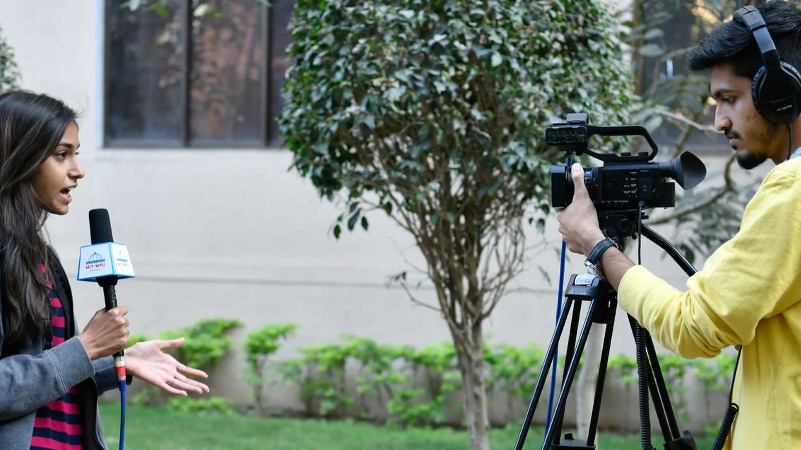

People
Faculty and staff

The Department of Media and Communication at MIT-WPU stands as a premier institution for media studies and journalism in the country.
Offering both undergraduate and postgraduate programmes, the department places a strong emphasis on cultivating critical and analytical skills in students while imparting knowledge about the intricate interplay between society, media, and communication.